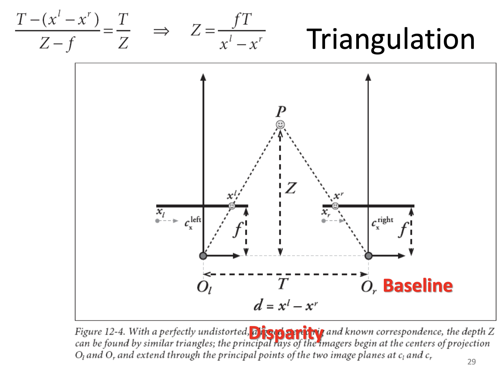

内容主要是Liming Song老师的计算机视觉课程的考试内容, 所以题目也叫期末速成笔记, 并不能很好地覆盖课程的全部内容, 仅供参考.
计算机视觉要解决的任务
中心任务就是对图像进行理解
- 对单幅图像、多幅图像、视频图像的理解
- 几个核心问题：分割问题、识别问题、三维重构问题、运动分割与跟踪问题
五大研究内容：输入设备、低层视觉、中层视觉、高层视觉、体系结构
- 基本任务:
- 图片和视频的分类
- 检测和定位物体, 图片分割
- 估计语义和集合属性
- 对人类活动和事件进行分类
- 挑战因素: 视角变化, 光线变化, 尺度变化, 物体形变, 物体遮挡, 背景凌乱, 内部类别多样
Marr视觉计算理论
- 信息处理分析的三个层次
- 计算理论层：目的？为什么合适？执行策略？需要使用何种类型的约束来完成这一过程 马尔认为合理的约束是场景固有的性质在成像过程中对图像形成的约束
- 表示和算法层：如何实现？输入输出的表示？标识和表示之间的变换？
- 实现层：物理上如何实现这些表示和算法？
- 视觉表示框架三个阶段
- 将输入的原始图像进行处理，抽取基本特征形成基元图
- 在以观测者为中心的坐标系中，由输入图像和基元图回复场景可见部分的深度、法线方向、轮廓等形成二维半图
- 后期阶段：以物体为中心的坐标系中，由输入图像、基元图和二维半图来恢复、表示和识别三维物体
格式塔心理学
- 相近性原理：距离近的物理总是容易被认为成一个整体
- 相似性原理：形状大小颜色等等物理属性相似时，就容易被认为成一个整体
- 连续性原理：视觉倾向于感知连续的形式而不是离散的碎片
- 封闭性原理：视觉系统自动尝试将敞开的图形关闭起来，从而将其感知为完整的物体而不是分散的碎片
- 优美形态法则：对称、简洁、规则的图形，尽可能组成好的图形。
- 图形与背景法则：大脑将视觉区域分为主体和背景，主体包括一个场景中占据我们主要注意力的所有元素，其余则是背景
二值图像
- 把灰度图像二值化，变为0/255或1/0（前景/背景）
- Otsu大津算法：通过直方图得到阈值, 最大化类间方差
- 几何特性：尺寸和位置 (只要求说出有哪几种)
- 尺寸
- 面积
- 区域中心
- 方向
- 某些形状没有方向；假定物体是长的，长轴方向为物体方向
- 将求方向转换为最小化, 为点到直线的距离
- 用最小二乘法拟合求解
- 将直线方程表示为, 那么到直线的距离为
- 最小化, 得, 则
- 说明回归直线过物体中心，代入，继续微分求解即可
- 伸长率：
- 密集度：, 周长相同，密集度越高面积越大
- 形态比:最小外接矩形长宽比
- 欧拉数:连通分量数减去洞数
- 距离度量
- 首先距离要符合对称性, 自反性, 三角不等式
- 欧几里得距离
- 街区距离(City Block distance)即曼哈顿距离,
- 棋盘距离即Chebyshev Distance,
- Minkowski距离(-norm distance):
- 尺寸
- 投影计算(要求知道定义和基本原理, 给例子会计算)
- 给定一条直线,用垂直于该直线的一簇等间距直线将一副二值图像分割成若干条,每一条内像素值为1的像素数量
- 垂直投影是对每一横行统计, 水平投影是对每一竖列统计
- 对角线投影, 标号为d的对角线: , 下面给出一种编号方式:
- 给定一条直线,用垂直于该直线的一簇等间距直线将一副二值图像分割成若干条,每一条内像素值为1的像素数量
- 连通区域
- 四连通, 八连通的邻点概念
- 连通分量标记算法(贯序)(以四连通为例)
- 从左到右从上到下扫描
- 分析上邻点标记与左邻点标记
- 只有一个存在或, 复制这一标记
- 复制上邻点标记, 在等价表中记两个标记为等价
- 都无标记, 分配新标记, 将记入等价表
- 区域边界跟踪算法(8邻点)(可能会出具体例子的计算)
- 从左到右从上到下找区域S起始点
- 用表示跟踪的边界点, 令, 其左邻点为
- 从开始逆时针地找的8邻点, 把第一个作为
- 选择下一个, 重复直到
- 可以加平滑
边缘检测
- 卷积与模板:
- origin of edges 四种最主要的不连续(discontinuity)
- 边缘检测基本思想
- 函数导数反应图像灰度变化的显著程度
- 一阶导数的局部最大值, 或者二阶导数的过零点
- 一阶边缘检测(有哪些)
- 用差分近似偏导数
- 梯度方向
- Roberts交叉算子
- Sobel算子
- Prewitt算子, 运算较快
- 二阶边缘检测(有哪些)
- Laplacian算子
- 卷积模板
1
2
30 1 0 1 4 1
1 -4 1 4 -20 4
0 1 0 1 4 1
- 卷积模板
- LoG算子(Marr&Hildreth算子)
- Laplacian of Gaussian
- 即图像与Gaussian函数卷积, 再求卷积Laplacian微分
- 或者求Gaussian函数的Laplacian微分,再与图像卷积
- 为什么要加G?
使用高斯滤波器进行降噪处理, 提高对噪声和离散点的鲁棒性
- Canny边缘检测
- 步骤
- 用高斯滤波器平滑图像
- 用一阶有限差分计算偏导, 然后计算梯度幅值和方向
- 对梯度幅值进行NMS非极大值抑制
- 去掉幅值局部变化非极大的点
- 将梯度角离散化为圆周的四个方向, 如果不大于在所在的离散方向的两个相邻点的幅值, 那么抑制
- 用双阈值算法检测和连接边缘
- 取高低两个阈值作用于新幅值图, 得到高阈值边缘和低阈值边缘图
- 连接高阈值边缘图, 出现断点时, 在低阈值边缘图中8邻点域搜寻边缘点
阈值的含义:
因为阈值太低会导致假边缘, 太高会导致部分轮廓丢失; 采用双阈值的方案, 首先使用高阈值边缘图为基础避免假边缘, 然后用低阈值边缘图来补全丢失的轮廓
- 步骤
- Laplacian算子
曲线
- 链码: 用相邻边缘点组成的方向序列来表示边缘
- 多边形(分线段)拟合: Douglas-Peucker算法
对每一条离散曲线的起点终点虚连一条直线, 求所有点与直线的距离, 找出最大距离, 与阈值比较- , 舍去这段曲线所有中间点(替换为这个线段)
- , 保留对应点, 以该点为界将曲线分成两部分, 然后对这两部分递归下去做
Hough变换
解决的问题: 形状检测
基于投票原理的参数估计方法: 图像中每一点对参数组合进行表决, 赢得多数票的参数组合为胜者(结果).- 直线检测, 把直线用参数方程 表示, 然后对离散化的参数组合进行投票
- 更具体的步骤:
- 适当量化参数空间(精度合适即可)
- 假定参数空间的每一个单元都是一个累加器，把累加器初始化为零．
- 对图像空间的每一点，在其所满足的参数方程对应的累加器上加1．
- 累加器阵列的最大值对应模型的参数．
圆弧检测:有三个参数, 两个确定圆心, 一个给出半径 (取边缘点梯度角) (关于的参数空间)
- 量化关于的参数空间到合适精度
- 初始化所有累加器为0
- 计算图像空间中边缘点的梯度幅度和角度
- 若边缘点参数坐标满足将对应累加器+1
- 最大值对应累加所在坐标即为图像空间中的圆心位置
- 得到圆心即可反过来求得半径
局部特征检测
- Harris角点检测
- 基本思想
通过观察一个小窗口应当可以很容易发现角点; 而朝着任何方向移动这个窗口都应该对图像的强度有很大的改变.下面这张图给出了预期的强度变化: - 窗口移动时的强度变化公式:

- 如果很小，可以有近似
所以得到了一个bilinear的近似(推导要记！): - 奇异值分析
- 对于的奇异值, 对应变化最快的方向(), 对应变化最慢的方向()
- 衡量角点响应
- , 角点
- , 边
- , flat region
- 旋转不变性: 旋转后形状不变, 所以角点响应应该对旋转不变
- 灰度仿射部分不变性: 使用导数所以对不变; 但是对于不具有不变性(对threshold的影响))
- 不具有尺度不变性
- 基本思想
- 解决scale invariant detection
- 设计一个关于区域(圆)的”scale invariant”函数, 对于图中的一个点来说, 可以认为他是区域大小(圆半径)的一个函数
- 常见手段: 取函数的局部最大值
- 达到最大值的应该是对于图像尺寸来说不变的, 通过找这个在- 不同尺度下的关系可以找到最合适的区域大小
- scale invariant的区域大小应该在各张图片里面单独找
- SIFT描述子的计算
- Full version计算的基本步骤:
- 将16x16的窗口分成4x4格
- 对于每一格, 统计里面每一小格的梯度和方向(使用边的方向,即梯度方向-90度)直方图
- threshold掉梯度小的方向
- 16格*8格方向, 128维的描述子
- 利用梯度的意义
- 梯度小的弱边可以threshold掉
- 利用patch里的dominant梯度对其进行定向, 这样就可以做到旋转不变性
- Full version计算的基本步骤:
人脸识别
- PCA主元分析
- 基本思想: 通过线性变换为数据集选择一个新的坐标系:
- 选择方差最大的投影方向作为第一条坐标轴
- 第二大的作为第二条, …
- 用途: 通过降维方式简化数据集
- 什么样的数据适合用PCA?
多元高斯分布; 维度过高但高维信息量低，相关度高的数据 - PCA求解
- 输入向量, 投影方向
- 基本思想: 通过线性变换为数据集选择一个新的坐标系:
- Eigenface特征脸
- 步骤
- 获得人脸图像的训练集，通常为整个人脸数据库；
- 对所有人脸图像作归一化处理；
- 尺寸归一化: mask
- 灰度归一化: 直方图均衡
- 通过PCA计算获得一组特征向量(特征脸)。通常一百个特征向量就足够；
- 将每幅人脸图像都投影到由该组特征脸张成的子空间中，得到在该子空间坐标；
- 对输入的一幅待测图像，归一化后，将其映射到特征脸子空间中。然后用某种距离度量来描述两幅人脸图像的相似性，如欧氏距离。
- 训练过程:
- 求协方差矩阵
- 求特征值与相应的归一特征向量
- 构建转换矩阵
- 识别, 重构
- 步骤
- Fisherface*
图像频谱与图像分解
- 图像的傅里叶变换
- 二维离散傅里叶变换
任何信号都可以表示成（或者无限逼近）一系列正弦信号的叠加。在一维领域，信号是一维正弦波的叠加，那么想象一下，在二维领域，实际上是无数二维平面波的叠加，对应的是一维领域的 ，而灰度（Brightness Variation）就是其变量对应一维领域的振幅。傅里叶变换存储每一个频率的幅值和相位信息, 前者代表这个频率上由多少信号, 后者间接代表空间信息 - 高频分量: 途中灰度变化剧烈的部分(图像边缘、线条以及纹理等细节信息); 低频分量: 途中灰度变换平缓的部分(图像的轮廓信息)
- 二维离散傅里叶变换
- 图像分解
图像分解就是把原始图像分解成两部分，结构和纹理。- 图像分解的角度理解傅里叶变换的意义
高频分量对应细节, 低频分量对应轮廓(?).
Gang Pan的课里讲这个的时候引入了基图像的概念, 我其实不太懂 - 拉普拉斯图像金字塔
- 高斯金字塔用的低通滤波器(低频通过)
- 因为拉普拉斯是由高斯低通滤波器相邻两层内插放大后求差得到, 此过程相当于带通滤波(一个频带内的可以通过).
- 图像分解的角度理解傅里叶变换的意义
图像拼接
- RANSAC (RANdom SAmple Consensus)
- 作用: 是大范围模型匹配问题的一个普遍意义上的方法，且运用简单，计算快。
- 基本思想
- 为了避免异常值outlier的影响, 寻找正常值inlier并只使用它们
- 如果选择了一个异常来计算拟合, 拟合的结果线不会得到太多其他点的支持
- RANSAC步骤
- 随机选择一组种子点来做基本的变换检测
- 从这组种子中计算变换
- 找出对于该变换是正常值的点
- 如果正常值很多, 对所有正常值重新计算变换的最小二乘估计
- 保留正常值最多的一个变换作为结果
- work flow
- 检测关键点
- 构造SIFT描述子
- 匹配SIFT描述子
- 拟合变换
- RANSAC
- 拼接图像
相机模型
- 基本概念
- 光圈aperture: 可以看作小孔成像中的孔径, 光圈越大进光面积越大
- 景深depth of field: 相机镜头能够取得清晰图像的成像所测定的被摄物体前后范围距离
- 光圈越小, 景深越大, 光圈太小会发生衍射现象也会糊;
- 焦距越短, 景深越大
- 拍摄距离越远, 景深越大
- 焦距: 透镜光心与焦点距离
- 视场(角)field of view: 焦距越大视场角越小
- 坐标系
- 世界坐标系: 物体在真实世界中的坐标
- 相机坐标系: 相机光心, 相机坐标系
- 图像坐标系: 在像平面投影即图像平面中心为缘点的坐标系
- 像素坐标系: 以图像左上角像素为原点的
- 坐标转换:
- 世界坐标系 -> 相机坐标系
- 相机坐标系 -> 像素坐标系
- 内参矩阵
- : mm 焦距
- : pixel/mm
- : pixel
- 内参矩阵
- 畸变
- 世界坐标系 -> 相机坐标系
- 径向畸变: 透镜形状导致的畸变
- 切向畸变: 透镜与成像平面不平行导致的畸变
- 畸变系数
- 相机标定
- 任务: 获取相机参数: 内参, 外参, 畸变系数
- 基本思想
- 自标定
- 不需要标定物体
- 在静态场景内移动相机
- 场景的刚性限制相机内参; 对应的b/w图像足够恢复内参外参
- 灵活但不够可靠
- 基于3d参考物体标定
- 观察3d空间中一个已知几何形状的物体, 物体一般需要两到三个正交平面
- 基于平面的标定(homography-based)
- 观察一个平面calibration pattern图像, 至少需要2种不同的观察方向(两张图)
- 优点: 比前面两者更灵活鲁棒
- 易于安装
- 每个人都能制作这个平面图像
- 棋盘标定的基本过程:
- 确定标定目标: 与棋盘成直角的两个平面
- 构造格点对该目标的坐标系统
- 获得图像的格点
- 使用图像坐标到世界坐标的方程得到相机内参外参(畸变系数)
- 一副图像的自由度: 8, 求解最少需要4个点, 8个等式
- 需要的图像数量
- 假设格点, 个图像, 有个格点限制
- 如果,
双目视觉
- 四个步骤
- Undistortion: 消除畸变得到无畸变图像
- Rectification: 校正相机使得两个图像行对齐
- 意义: 把2D搜索变成1D搜索, 才能算出视差
- Correspondence(Stereo matching): 在两个图像中找到相同的特征得到视差
- 可以用SIFT做
- Reprojection: 重投影从三角剖分得到深度图
- 深度与视差反相关; 与焦距, 眼距正相关
- 三角化

结构光
- 系统构成: 结构光投影仪, CCD相机, 扫描对象
- 推导
- 基于光条的位码
- 逐个点扫描太慢, 将光分为光条来加速扫描过程
- 位码含义
- 位码为,使用二进制下第为1的光条, 如位码为1时为1,3,5,7
- ICP(Iterative Closest Point 迭代最近点法)
- 问题: 如何把多个扫描结果拼接在一起
- 基本步骤
- 首先建立两个扫描结果之间点对应关系, 根据最近原则初始化一个
- 通过迭代获得一个仿射变换来描述1.中对应点的变换关系(平均距离最小)
- 对扫描结果上所有点应用该仿射变换函数
- 选取两个扫描结果中距离最近的点作为对应点, 计算对应点距离, 若大于阈值则继续2.3., 否则结束
- Shape from shading
- 三个假设: Lambertian表面(理想散射平面), 较远点光源, 较远观察者
光流法
- 问题: 如何从图像与图像中检测像素的移动?
- 解决像素匹配问题, 给定像素, 寻找中附近相同颜色的像素
- 三个关键假设:
- 亮度恒定
- 空间连贯性
- 场景中属于相同物体的邻点应该有相似的动作
- 移动幅度较小
- 使用纹理复杂区域的光流比较可靠, 因为梯度大且方向不同, 求出来特征值比较大; 避免使用边缘上的点计算光流
- 为了克服三个假设可能不满足的困难, 可以分为更小的步骤一轮轮迭代
- Coarse-to-fine的克服方法
- 在高斯金字塔上做, 自顶向下
- 每一层跑一次LK算法, warp之后上采样, 重复该步骤
图像分割
K-means算法
目标:
- 中心点, 聚类, 数据
- 步骤
- 随机选取K个中心点
- 将每个点分配到最近的中心点(聚类)
- 算出每个聚类中的中心, 继续迭代2.3.
- Mean shift
对每一个点集寻找一个mode- 选择kernel和bandwidth
- 对每个点
- 找一个该点的窗口
- 计算窗口内数据平均值
- 将窗口中心设为新的平均值的位置
- 重复上面两步直到收敛
- 将mode附近的点分配给同一个聚类
- 优点
- 泛用性较好
- 区域的数量和形状灵活
- 对异常值鲁棒
- 缺点
- 难以选择kernel size
- 不适合高维特征
- 基于Graph Cut的图像分割
- 将每个像素当作一个点, 边表示像素间的关系, 边权表示每对邻点的相似度(其实应该是距离?)
- Ford-Fulkerson算法求最大割
物体检测与识别
- 积分图
- 积分图感觉有点像一个矩阵二维前缀和
- 因为初期提取的特征很多, 需要进行特征选取, 训练一个弱分类器来找出一个矩形特征来最好地区分正样本负样本
- 词袋(BoW bag-of-words)模型
- 词袋概念:
- 一系列单独的feature
- 使用直方图来表示
- 基本步骤:
- 特征抽取与表示
- 从训练样本中使用聚类构建codebook(codeword字典)
- 用codebook的直方图来表示(例如BoW)
- 使用BoW来对未知图象进行分类
- 词袋概念:
深度学习
- 端到端学习: 只关心输入输出, 把多阶段任务放在一个步骤里解决
- 本质是学习权重, 常用梯度下降法
- 卷积层
- 作用: 用于提取图像特征
- 参数个数只与kernel数量与size有关, 卷积层输出size的计算(原图size, 步长stride, kernel size)
- pooling层
- 作用: 用于简化特征表达, 减少特征数量
- max pooling, mean pooling
- 默认步长与size相同相当于缩放
- LeNet
- S2, C3层连接方式
- S2, C3层连接方式
- TensorFlow: tf.placeholder, tf.Variable, tf.nn.conv2d, tf.nn.bias_add, tf.nn.relu